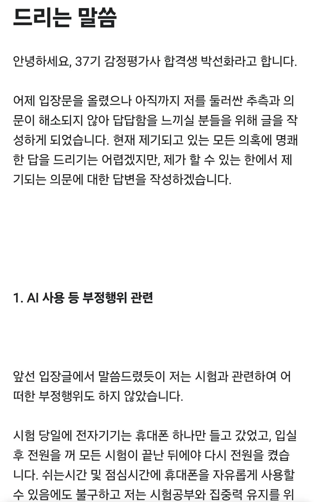
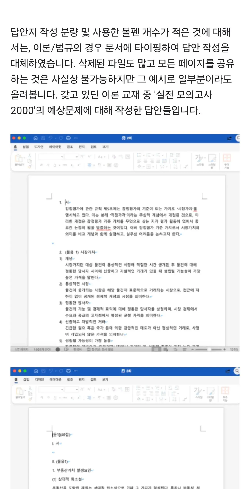
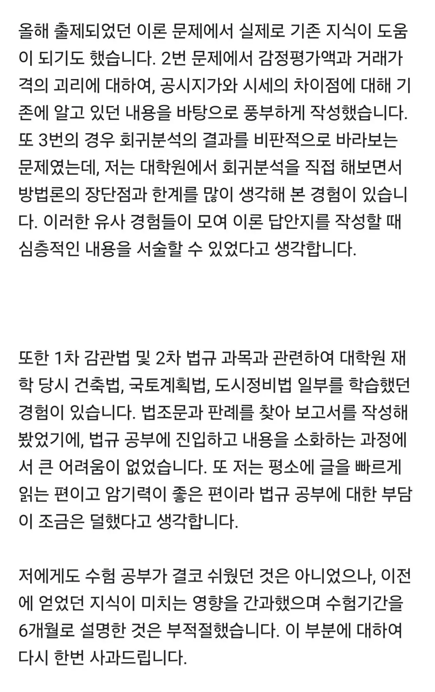
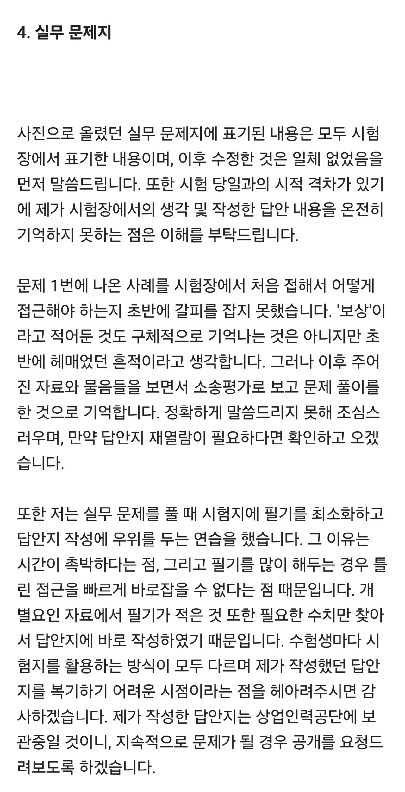
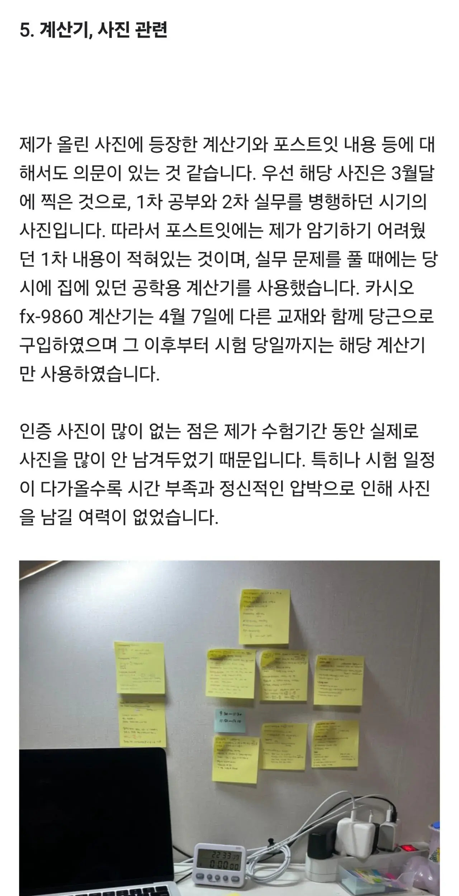
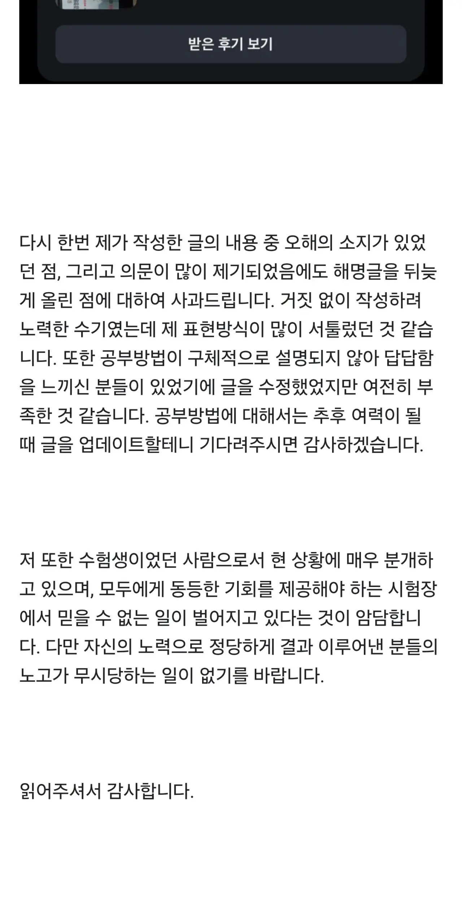

치팅 안했고 원래 서울대 학사-도시계획학 석사라 기본적인 지식이 있다.
노베이스로 6개월만에 합격했다는 뉘양스로 느껴졌다면 미안하다
치팅을 안한게 맞으면 노베 6개월로 합격했다 라고 꺼드럭 거리다가
유탄 맞은듯






치팅 안했고 원래 서울대 학사-도시계획학 석사라 기본적인 지식이 있다.
노베이스로 6개월만에 합격했다는 뉘양스로 느껴졌다면 미안하다
치팅을 안한게 맞으면 노베 6개월로 합격했다 라고 꺼드럭 거리다가
유탄 맞은듯
관련학과 석사인데 심지어 서울대 풀베이스이면서 노베라고 꺼드럭ㅋㅋㅋ 된통 혼났네ㅋㅋㅋ
풀베이스였네 아 ㅋㅋ
감평사갤 가보니까 서울대석사 였다만으로는 해명이안된다는데 ?
어짜피 감평사 공부하는 수험생들 sky출신들 세고셌는데 얘네들이 3년 공부해도 힘든시험이고 기본머리가좋다고 단기간에 붙는시험이아니라고함.
그리고 합격수기도 어느문제는 어느 책에 나왔다, 이 문제는 어떤점에서 헷갈리고 고민많이했다 이런 내용하나도없어서 다 의심함
관련 전공 석사면 다르지않나
감평사갤 념글 내용 퍼옴
==========================
제가 학부 및 석사가 도시공학이라 과정을 통해 동심원이론 등을 접한바 있어 베이스가 있습니다.
= 제가 경제학 전공이라재무회계 파트에서 초인플레이션 회계,생물자산 농림어업의 세부 예외를 수업중 접한 바 있습니다.
= 제가 무역학 전공이라 회계감사 파트중 감사인의 법적책임 및 과거,전통적 감사 접근법의 역사적 변천 파트에 대해 접한바 있습니다
= 제가 경영학 전공이라 세.법학 중 조세원칙론에 대한 추상적 학설 대립에 대해 접한바 있습니다
뭔말인줄 알겠노? 동심원이론 << 그냥 양심상 뺄수없어서 책에 넣어둔거지 감평 합격생 및 수험생 이론서에 저부분 읽지도 않고 넘기는사람이 100%임
근데 뭐 동심원이론을 접한적이 있어서 베이스가 있다고???? 진짜로?? ㅋㅋㅋㅋㅋㅋㅋㅋㅋㅋㅋㅋㅋㅋㅋ 진짜 합격생이면 저말 하기 힘들걸 대한민국에 감정평가이론강사가 한 7명 된다고 가정하고 그들이 최근 10년간 g.s 0,1,2,3기 중에 대략 G.s 2800번 문제 출제를 했다고 가정해도 그 2800번 안에 동심원 이론이 한번이라도 나왔나 보면됨 ㅋㅋㅋㅋㅋ 절대없는 파트임 그런걸로 베이스 있다고 수기쓴다는것부터가 진짜 수험을 해봤다고 말하는게 가능한지 의문이 들지 ㅋㅋㅋㅋㅋㅋ 합격자들도 저거 수기보면 어이가 없을껄? 자기들은 단한번도 펼치지 않은 파트를 베이스있다고 주장하는데 쓰고있으니
이상함. 저사람이 전공한거는 1차에 한해서는 오케이임. 감관법 국계법에는 도움이 될 수 있는데 2차 법규는 행정법 토지보상법인데 전혀 다른 영역일텐데.. 지대이론도 1차 내용이고 2차시험에는 별로 안 나올 내용.. 아무리 베이스여도 1차 회계 경제 하려면 두달정도 시간 썼을거고 2차는 4개월 남짓인데 실무랑 저게 된다고..? 아무리 서울대여도 물리적인 공부량이 있는데 신기하네..
서울대 들어가는 수준이면 이제 범재의 영역을 초월함.
재능이 남다르면 충분히 가능할거 같은데?
제 주변에 서울대생이 존나 많아서 아는데 사람들이 환상을 가지고 있음. 서울대면 진짜 엄청난 사람들이 갈거라는.. 안 그렇습니다.
저건 실력 맞네ㅋㅋㅋ 설대 학사에다 노베이스도 아니고ㅋㅋ
꺼드럭대다가 불똥 튀신 듯ㅋㅋㅋ
서울대 학사석사? 이게 검증이 필요한 일인가??? 현우진영상도 돌아다니자나. 중3방학때 책 200권 읽고 보니까 문단 하나가 한눈에 들어오더라. 그때부터 1등 놓친적없다.
그러니까, 비틱질하다가 유탄맞으셨다는건데
감평갤 들어가보니까 장수생들 병신취급한다고 열받아있던데 ㅋㅋㅋ
저 상황 지켜보면서 웃고있을 ai치트 부정행위 한 놈들이 한트럭이겠지
자격증 갤러리 가면
공부기간 줄여서 천재호소하는 애들 천지임ㅋㅋㅋ
합격수기만 보면 .. 노베 6개월동안 마라톤도 하고 가족여행도 가고 다쓴 볼펜은 네자루 .. 보면서 많은 생각 들었었음
타자격사인데 4개라...
감평2차도 주관식 아닌가? 실제 시험처럼 연습만해도 4개..는 넘을거같은데..
뭐라해도 반박은 ai아님?
이러면 걍 끝임
그리고 시험 초단기 합격 이러는 애들
노베 절대 아니다
이런 상황 아니었으면 인플루언서도 되고 어디 섭외도
되고 뭐 이득 보려고 구라치신거 같은데 어쩌겠냐 넘 티배깅이었어
학원용 합격수기 쓴 거 같음
ㅋㅋㅋㅋㅋㅋㅋㅋㅋㅋ기만충ㅇ엿구나..
노베 N개월만에 합격 어쩌고 특 = 노베이스 아님
개빡통 고졸 딸배들은 따라 올 수 없는 베이스는 사람으로 생각 안 하니 생략하고 말함
그 비틱질 믿고 나도 할 수 있을까 헛된 희망 믿게 하는거도 진짜 나쁨. 치팅은 대놓고 나쁘지만 비틱질도 은근히 나쁜거라 생각해욧
ㅇㅇ ㅈㄴ나쁜놈들 일반백성들은 침팬지 언저리로 생각함
헬스 제대로 한 건 2~3년 밖에 안됩니다.= 6년 이상이라는뜻
헬스계도 그거 사라짐 ㅋㅋㅋ 로이더냐 의심 받으면서 년차별로 근성장 증명해야하는 시대가 됨
ㅇㅇ 인스타에 한참 마이애미짐 6개월만에 몸만드는 릴스 유행했었는데 마-이-애-미-짐
애미가 뒤졌다니 너무해 ㅠㅠ
학원 홍보용으로 수험기간 줄여서 합격수기 쓰는 행위는 줄어들겠네 저것도 사실이라면 같은 거였고
어쨌든 이 사람은 순수 실력인거잖아 꺼드럭되는건 알빠고 ㅋㅋㅋ
님들 저도 꺼드럭 거리고 싶습니다.
산안기 x개월 공부하고 땃습니다
우선 위 글도 잘 읽히게 잘쓰네
노베이스 꺼드럭 시대가 끝났네 ㅋㅋ
예전엔 노베이스다 하면 빨아주고 공부법 책으로 내고 강사 들어오고 그랬는데 이젠 ai ㅋㅋㅋ
운동쪽에서도 꺼드럭 사라졌자나 ㅋㅋ 헬스 1년차 신입 헬린이 입니다 이것도 이거 로이더 아냐? 로 이제 증명해야하는 시대가 됨 ㅋㅋㅋ
ㅅㅂ 무슨 자격증 시험마다 n일~n주 노베이스 합격 이런 블로그 글들이 다 이런 꺼들먹거리는 사람들이었구나 ㅡㅡ;
대부분 학원에서 좀 부추기는 거긴 함... 프리패스 합격 후 환급받을때 후기 쓰거든
풀장비차고 도전한거였자나 ㅋㅋ
수험기간 줄여서 꺼드럭대기는 전문직 시험들 마다 나오는 기본스킬이었는데 이게 이렇게 ㅋㅋㅋㅋㅋ
화들짝 놀라 베이스가 술술술 나오네 그냥 ㅋㅋㅋㅋ
그냥 자기 학력으로 커버치려는 것 같은데 납득 안되긴함
감평 해본 사람이면 저걸 베이스라고 말한다고? 하면서 의문이 들만함.
합격수기 대부분이 꺼드럭대고 본인 성공신화 자랑글이라 놀랍지도 않음
원랜 꺼드럭 거리면 묘한 분위기 속 무관심을 음미하며 기분 좋앗을텐데
이젠 바로 ai 사용햇다고 살인스텝 들어오는 거임ㅋㅋ잘못 꺼드럭대다 뒤지는 거임ㅋㅋㅋㅋㅋ